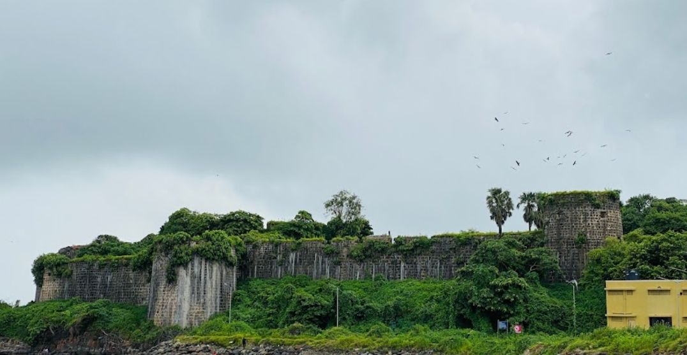
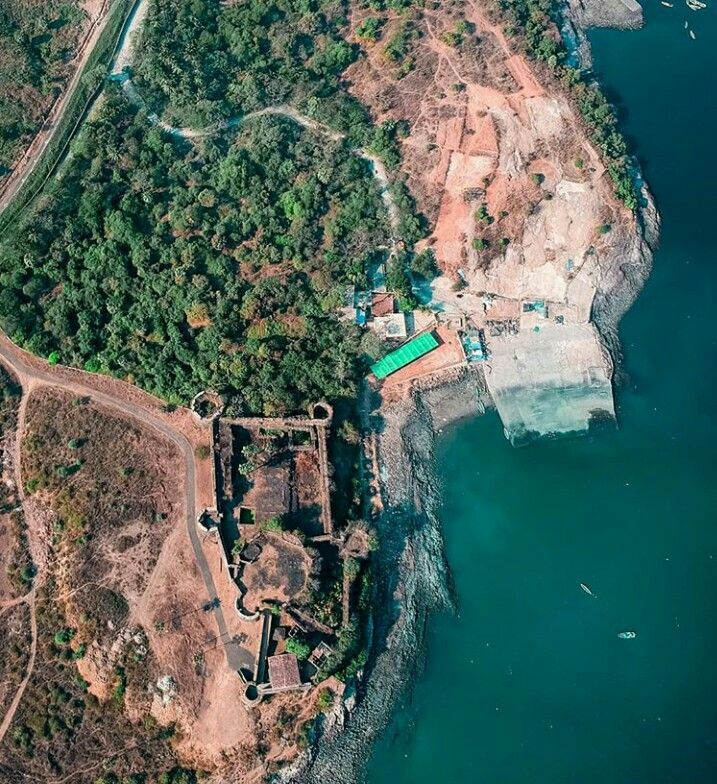
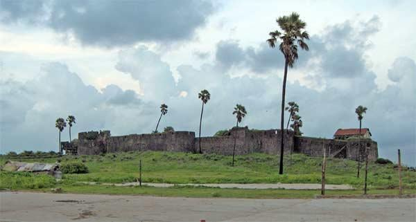
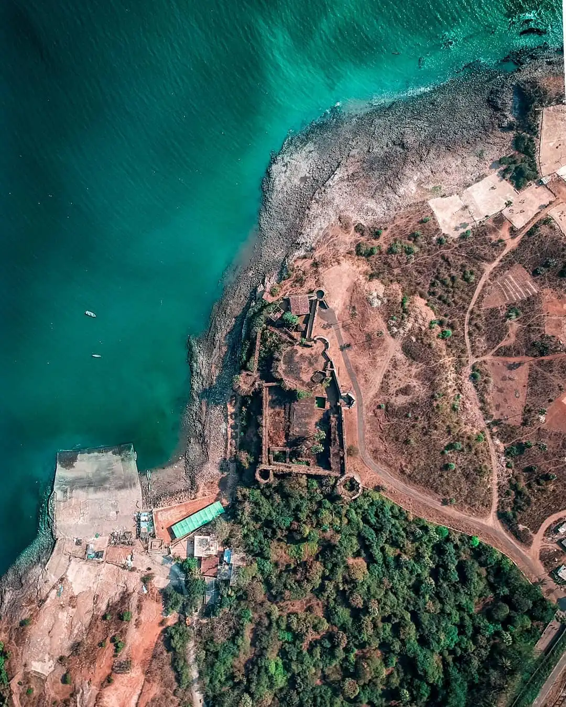
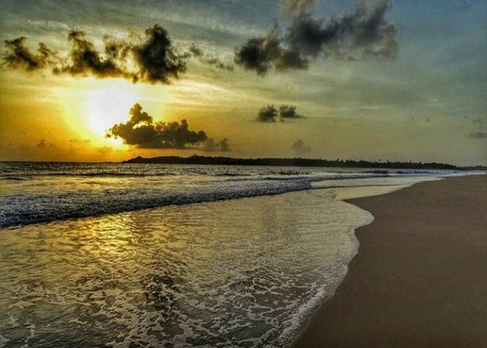
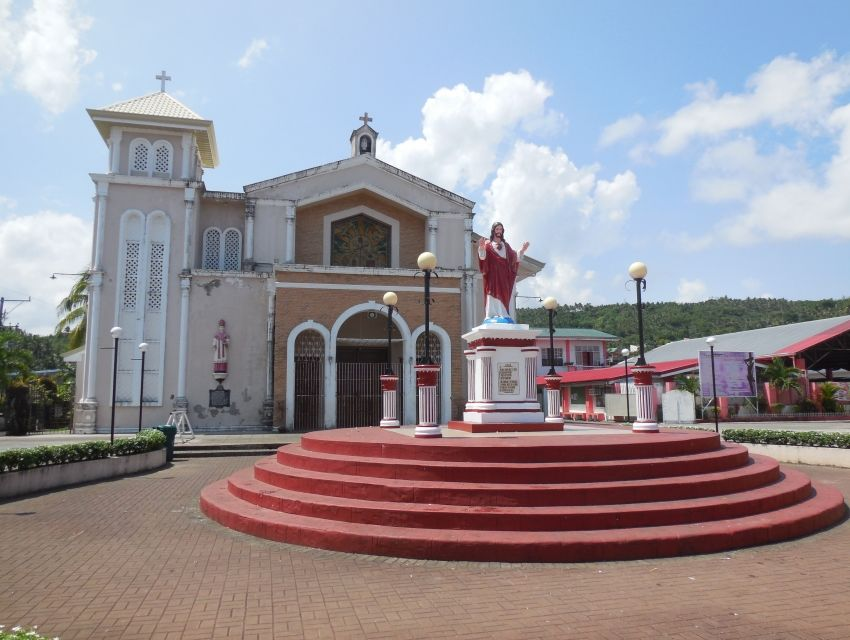
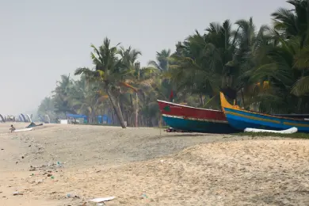
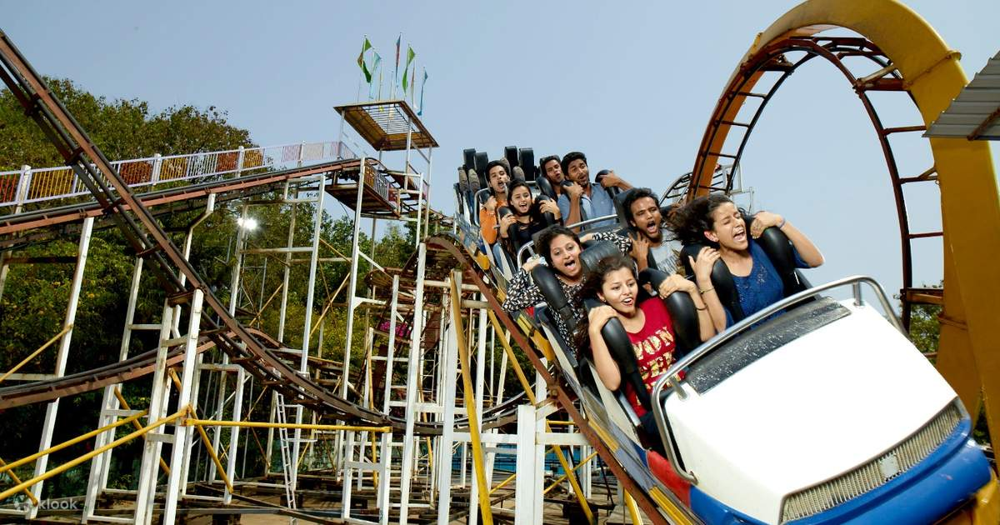

Madh Fort





Madh Fort, a charming 17th-century coastal stronghold, stands as a symbol of strategic ingenuity near Madh Island in Mumbai, Maharashtra. Originally built by the Portuguese, this fort was later captured and fortified by the Marathas, highlighting its importance in securing the region against European colonial powers and local adversaries. Perched on the shores of the Arabian Sea, Madh Fort offers panoramic views of the coastline and surrounding fishing villages, reflecting its role as a defensive outpost. Its robust stone walls and bastions, though weathered by time, exhibit the architectural techniques of the era. The fort's layout includes narrow pathways, lookout points, and remnants of rooms that once housed soldiers, showcasing its functionality as a military base. Although much of the fort is in ruins today, its proximity to Mumbai makes it a popular destination for history enthusiasts and photographers. The fort's serene surroundings, coupled with its historical significance, provide a unique escape from the bustling city.While Madh Fort is not open to the public for extensive exploration due to its use by the Indian military, its exterior and nearby beaches, such as Erangal and Aksa, remain accessible and are perfect for a leisurely visit. Madh Fort stands as a reminder of Mumbai's rich maritime history and the region's vibrant cultural past.

Madh Fort is perched on the shoreline of Madh Island, offering panoramic views of the Arabian Sea. This strategic position allowed it to serve as a key surveillance and defense point, monitoring maritime activities and guarding against invasions.

Unlike many historical forts, Madh Fort is still actively used by the Indian military for training purposes. While visitors can view its exterior and surrounding beaches, entry is restricted, adding an aura of mystery and preserving its structural integrity.

Madh Fort is surrounded by picturesque beaches such as Aksa Beach and Erangal Beach, enhancing its appeal. These serene locations provide a stark contrast to the fort's historical military purpose, making it a popular spot for sightseeing.
Madh Fort’s imposing exterior is a striking example of coastal defense architecture. Built with robust stone walls and featuring multiple bastions, the fort stands tall against the Arabian Sea’s relentless waves. Though entry to the fort is restricted, visitors can walk around its base, marveling at its strategic placement and timeless design. The combination of its weathered structure and scenic backdrop makes it an intriguing destination for photographers and history enthusiasts alike. Its enduring presence serves as a reminder of the fort's historical significance and the ingenuity of its builders.

The coastal setting of Madh Fort makes it a prime spot for breathtaking sunset views. As the sun dips into the Arabian Sea, the fort’s silhouette is bathed in golden and orange hues, creating a mesmerizing scene. The tranquil ambiance of the area, accompanied by the sound of gentle waves, offers a perfect opportunity for reflection or relaxation. This picturesque moment is a favorite for photographers, nature lovers, and visitors looking to escape the hustle and bustle of Mumbai.The vivid colors of the setting sun reflecting off the fort’s sturdy walls and the shimmering waters create a magical atmosphere that feels timeless.

Distance: 2 km
Aksa Beach is known for its wide stretch of golden sands and peaceful atmosphere, making it a favorite spot for relaxation. Visitors can enjoy long walks, serene sunsets, and the rhythmic sound of waves.The beach is less crowded compared to others in Mumbai, offering a tranquil escape from the city.

Distance: 2 km
This historic 16th-century church, built during the Portuguese era, is a serene landmark located near Madh Fort. The church is admired for its colonial architecture and tranquil surroundings, making it a peaceful place for reflection. Its timeless appeal attracts visitors interested in history and spirituality alike.

Distance: 1.5 km
Erangal Beach is a quiet, unspoiled beach near a charming fishing village, perfect for those seeking solitude and natural beauty. The area provides a glimpse into the local coastal lifestyle with traditional fishing boats dotting the shore. It’s an excellent spot for photography and experiencing the simplicity of village life.

Distance: 12 km
EsselWorld and Water Kingdom are India’s largest amusement and water parks, offering thrilling rides and fun activities for visitors of all ages. The parks feature a variety of attractions, from high-speed roller coasters to lazy river rides. Perfect for a family day out, they combine adventure, entertainment, and relaxation.